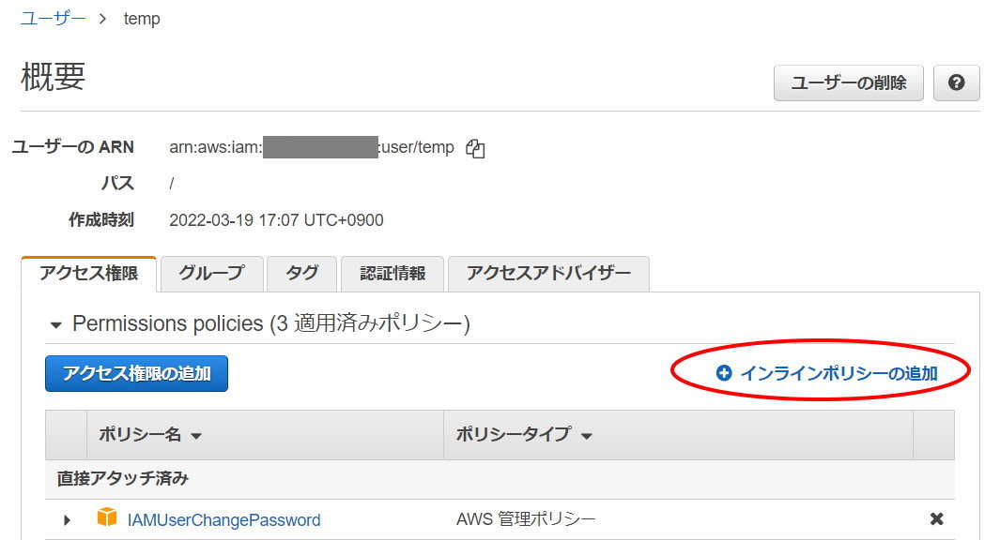
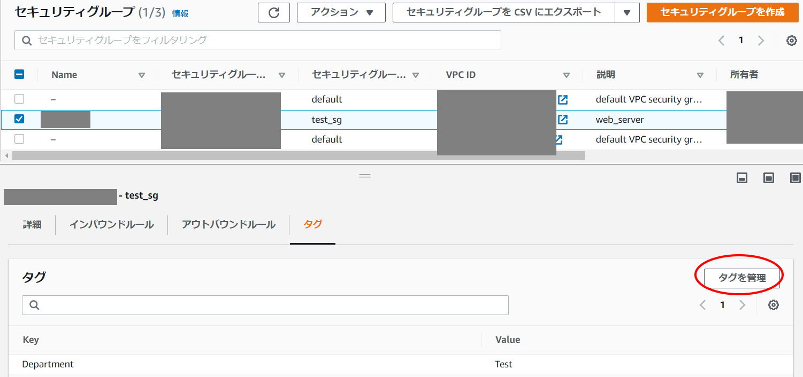

1. 対象のIAMユーザ画面で「インラインポリシーの追加」を選択

2. JSONを以下のように編集
{
"Version": "2012-10-17",
"Statement": [
{
"Effect": "Deny",
"Action": [
"ec2:ModifySecurityGroupRules"
],
"Resource": [
"arn:aws:ec2:*:*:security-group/*"
],
"Condition": {
"StringNotEquals": {
"ec2:ResourceTag/Name": "何かしらタグ"
}
}
},
{
"Effect": "Allow",
"Action": [
"ec2:DescribeSecurityGroups",
"ec2:DescribeSecurityGroupRules",
"ec2:DescribeTags",
"ec2:ModifySecurityGroupRules"
],
"Resource": "*"
}
]
}
3. セキュリティグループにタグ付け
以下の画面からタグを追加。key=Name、value=上記の"何かしらタグ"。

特定のタグを持つセキュリティグループ以外に対し権限を排除するためのもの。
| key | valude | 解説 |
|---|---|---|
Effect |
Deny |
conditionを満たすときはActionの権限を持たない |
Action |
ec2:ModifySecurityGroupRules |
セキュリティグループの編集操作 |
Resource |
arn:aws:ec2:*:*:security-group/* |
ec2のセキュリティグループ全部 |
全リソースに対して権限を付与するもの。
| key | valude | 解説 |
|---|---|---|
Effect |
Allow |
conditionを満たすときはActionの権限を持たない |
Action |
ec2:DescribeSecurityGroups |
セキュリティグループを見る権限 |
Action |
ec2:DescribeSecurityGroupRules |
|
Action |
ec2:DescribeTags |
じゃあ「特定のリソースだけ権限を与えればいいじゃん」と考えたい。どうも「リソースレベルの権限をサポート」しているかどうかが問題らしい。例えば次のようになっている。
ModifySecurityGroupRules:リソースレベル設定をサポートするDescribeSecurityGroups:リソースレベル設定をサポートしない
公式でもこのような書きぶりになっており、従ってModifySecurityGroupRulesはリソースごとに特定できるはずだが、どうもうまくいかなかったため、全リソースに付与した。
以上